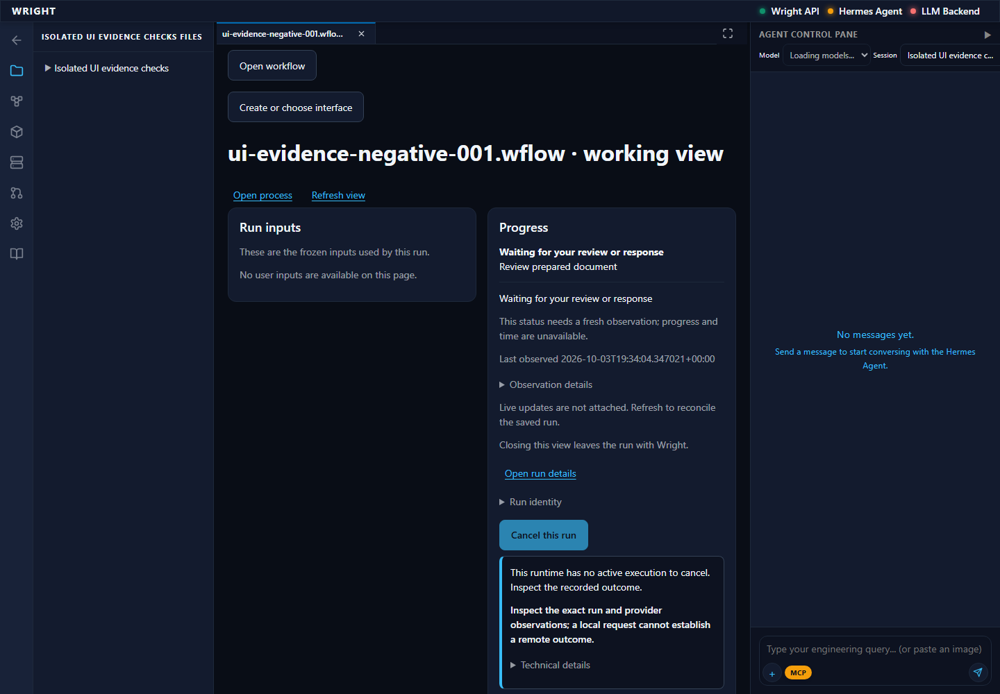
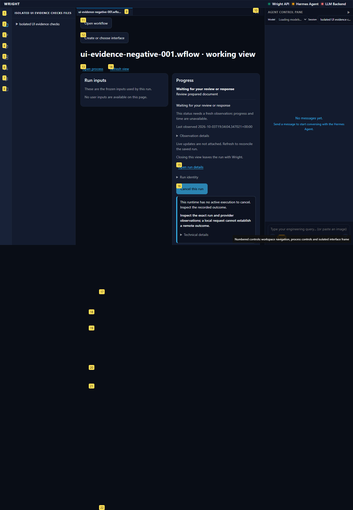
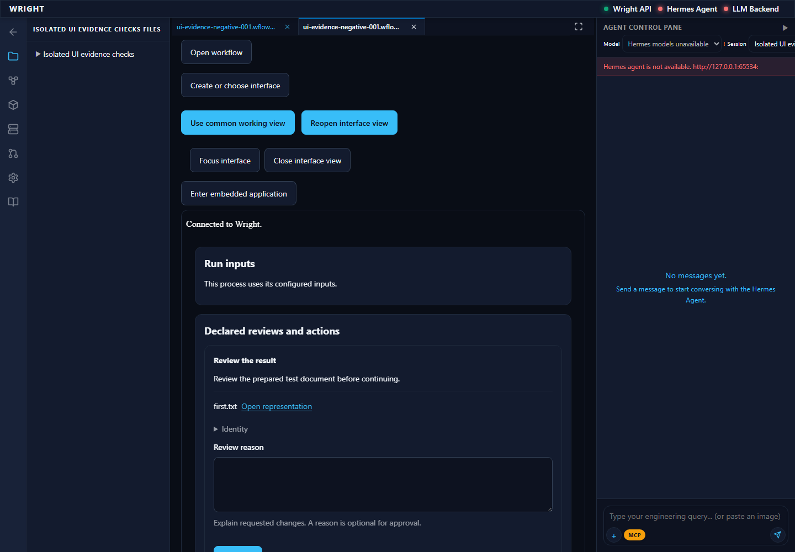
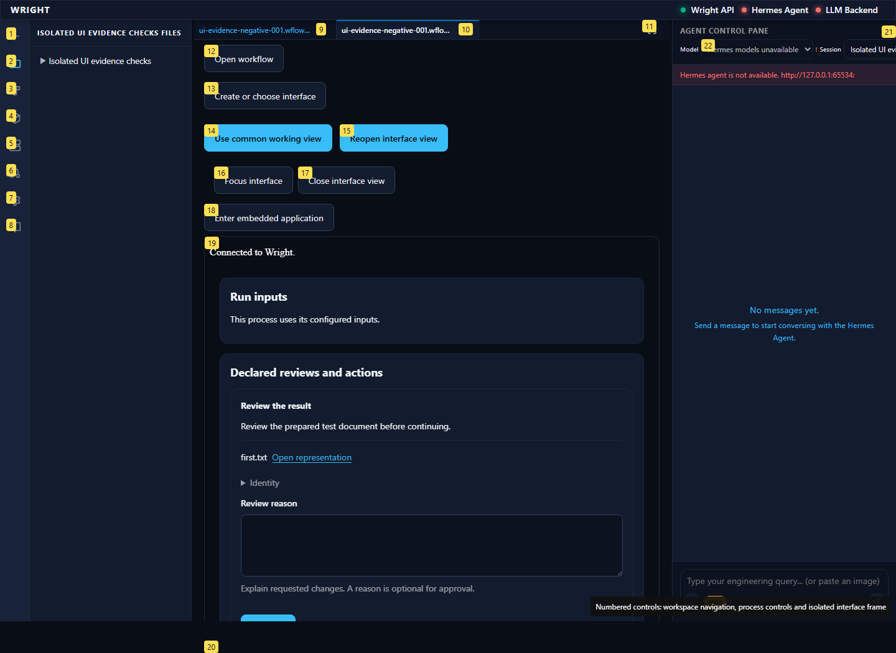
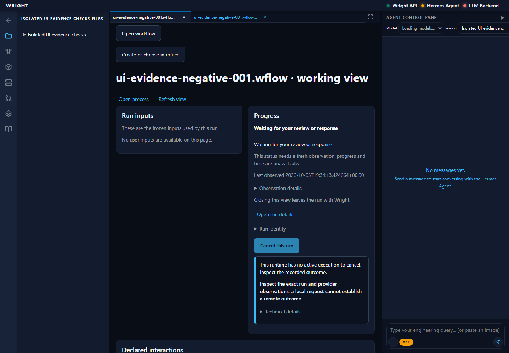
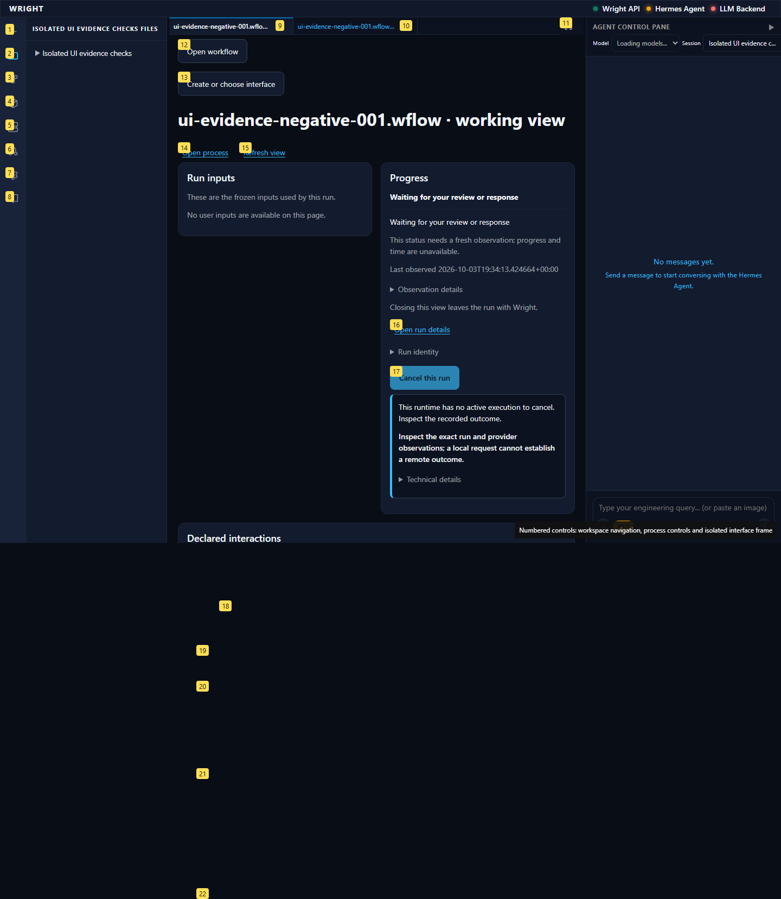
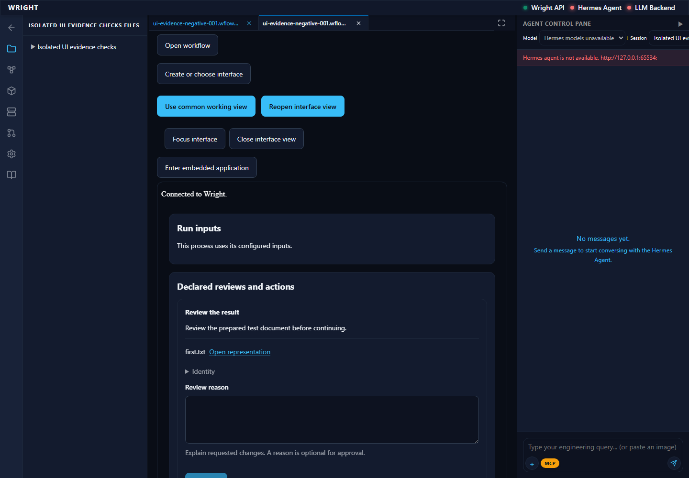
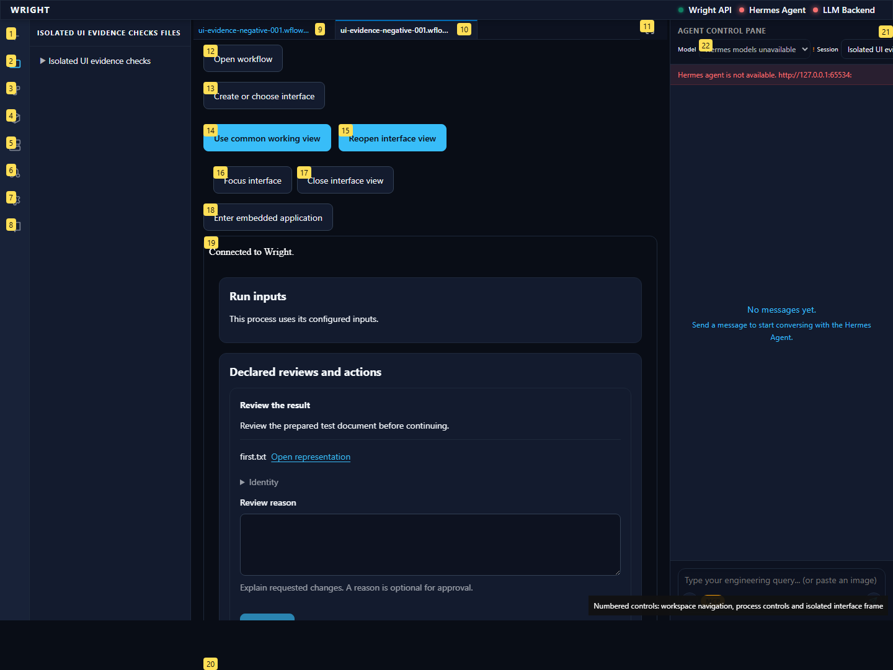

EXDEV: cross-device link not permitted, rename 'C:\Users\markb\.codex\visualizations\2026\09\24\01a0d4b8-b5fa-79d0-8e8b-fc78c3dfd056\t056-negative-native-home-003\data\workspaces\proof\first.txt' -> 'D:\repos\wright\.local-run\process-interfaces-083\t056-negative-native-003\missing-reviewed-document.txt'
blocked
Exact original evidence enables Approve. Earlier ten-step saved-preview proof is retained; no preview, producer or authoring is repeated.
Expected: Same exact saved review available; no execution or decision
Actual: Exact original evidence enables Approve. Earlier ten-step saved-preview proof is retained; no preview, producer or authoring is repeated.


Exact original evidence enables Approve. Earlier ten-step saved-preview proof is retained; no preview, producer or authoring is repeated.
Expected: Same exact saved review available; no execution or decision
Actual: Exact original evidence enables Approve. Earlier ten-step saved-preview proof is retained; no preview, producer or authoring is repeated.


Changed document blocks the review and explains refreshing its exact evidence.
Expected: Approve unavailable with exact stale evidence reason
Actual: Changed document blocks the review and explains refreshing its exact evidence.


Changed document blocks the review and explains refreshing its exact evidence.
Expected: Approve unavailable with exact stale evidence reason
Actual: Changed document blocks the review and explains refreshing its exact evidence.


EXDEV: cross-device link not permitted, rename 'C:\Users\markb\.codex\visualizations\2026\09\24\01a0d4b8-b5fa-79d0-8e8b-fc78c3dfd056\t056-negative-native-home-003\data\workspaces\proof\first.txt' -> 'D:\repos\wright\.local-run\process-interfaces-083\t056-negative-native-003\missing-reviewed-document.txt'
Expected: The declared next behavior
Actual: EXDEV: cross-device link not permitted, rename 'C:\Users\markb\.codex\visualizations\2026\09\24\01a0d4b8-b5fa-79d0-8e8b-fc78c3dfd056\t056-negative-native-home-003\data\workspaces\proof\first.txt' -> 'D:\repos\wright\.local-run\process-interfaces-083\t056-negative-native-003\missing-reviewed-document.txt'